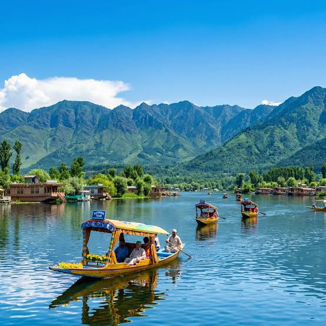
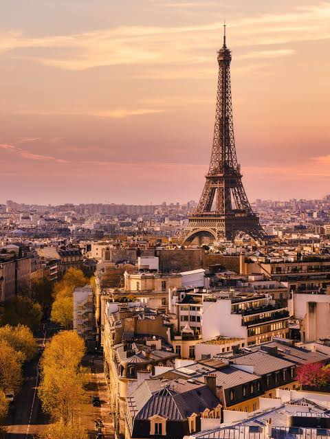

Kashmir offers an unforgettable travel experience, famously known as "Heaven on Earth."Top Places to VisitSrinagar: Stay in a traditional houseboat on Dal Lake and enjoy a serene Shikara ride.Gulmarg: Ride the Gondola, one of the world's highest cable cars, and experience winter snow sports.Pahalgam: Relax by the scenic Lidder River and explore the lush Betaab Valley.Sonmarg: Trek through breathtaking alpine landscapes and view spectacular glaciers.

Paris is the capital and most populous city of France, renowned globally as a dominant center for art, fashion, gastronomy, and culture. Curving through the heart of the city is the Seine River, which divides Paris into the historic Right Bank to the north and Left Bank to the south. The city proper covers approximately 105 square kilometers (41 square miles) and is organized into 20 clockwise-spiraling municipal boroughs called arrondissements.
